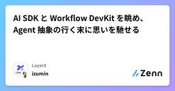

LayerXのフィード
https://zenn.dev/p/layerx
すべての経済活動を、デジタル化する。SaaS + Fintech に取り組む LayerX のエンジニアの記事が集まる Publication です。
フィード

AI SDK と Workflow DevKit を眺め、Agent 抽象の行く末に思いを馳せる 2
2
LayerXのフィード
LayerX AI エージェントブログリレー 52日目の記事です。バクラク事業部 スタッフエンジニアの @izumin5210 です。Platform Engineering 部 Enabling チームでいろいろなことをしています。AI SDK 6 Beta で ToolLoopAgent class と Agent interface, Workflow DevKit(vercel/workflow) のサブパッケージである @workflow/ai で DurableAgent と、Agent の抽象を表すための概念が3つ続けて登場しています。 本記事ではこれらの定義・実装...
4日前

Coding Agent はコード検索をいかに行っているか
LayerXのフィード
LayerX AI エージェントブログリレー51日目の記事です。前回の記事は、@unachang113 の 「大きなHTMLをAIで取得したくなったときに考えたこと」 でした！バクラク事業部 CTO の @yyoshiki41 です！今回、Coding Agent に代表されるような AI 開発ツールがコード検索をどのように実現しているかについてみていきます。 前置き汎用的なチャットボットであるChatGPTの登場以前から、LLMを利用したコード生成の製品化は進んでいました。2021年に発表されたGitHub Copilotは、GitHubとOpenAIに...
8日前
大きなHTMLをAIで取得したくなったときに考えたこと #LayerX_AI_Agent_ブログリレー
LayerXのフィード
こんにちは。LayerXバクラク事業部でCREをしているuna（@unachang113）です。こちらはLayerX AI エージェントブログリレー50日目の記事です。前回の記事は矢野目さんのLLMで業務ワークフローを自動生成・最適化する! 〜ワークフロー自動生成・最適化の取り組みについて〜 でした。今回の記事では大きなHTMLをAIエージェントで扱いたい時にどう解消したかのトライアンドエラーについて話そうと思います。 背景先日、自分が所属していた申請・経費精算チームでMarkuplintというHTMLのマークアップが正しいか確認するための静的解析ツールを導入しました。しか...
9日前
AIエージェントを開発するPdMがやることをプロンプトを書きながら考える
LayerXのフィード
こちらはLayerX AI エージェントブログリレー48日目の記事です。こんにちは、CEO室でAIエージェント開発のPdMをしているKenta Watanabeです。昨日はTomoakiさんの作って学ぶ ChatGPT Atlasでした。Evalに関する実用的な記事になる予定だったんですが、ちょっと別テーマで書きたいことが出てきたのでテーマを変えてみます。これまでのAIエージェントブログリレーでは開発寄りの記事を書いてきましたが、今日はPdM目線での記事を書きたいと思います。普段はAIエージェントの企画・開発を行っていますが、企画と開発両面で従来のプロダクトとの違いを感じる場面が...
11日前
作って学ぶ ChatGPT Atlas
LayerXのフィード
これは LayerX AI Agent ブログリレー の47日目の記事です。前回は澁井さんの 「AIエージェントで「不要な過去を忘れる」」 でした。明日はバナナ好きで社内で有名なKentaさんがEvalに関する実用的なブログを書いてくれるはずです🍌こんにちは、公私共にBet AIしたいTomoaki（@tapioca_pudd）です。みなさんは、どのブラウザをお使いでしょうか？The Browser Company Dia や Perplexity Comet など、AI をネイティブに搭載したブラウザが次々と登場する中、先日 OpenAI からも ChatGPT Atlas（以...
12日前
AIエージェント機能を継続的に生み出すプロダクトマネジメントについて
LayerXのフィード
LayerX バクラク事業部でプロダクトマネジメント組織を管掌している飯沼(numashi)です。この記事はLayerX AI Agentブログリレー44日目の記事です。今回はテックブログに全然テックじゃない話を差し込んでみようと思います。ちょっとくらい閑話休題ということで、LayerXにおいてAI系の機能を連続的に生み出す仕組みづくりや考え方について書きます。ちなみに、自分自身もプロダクトマネージャーがPRD（Product Requirement Documet、要は仕様書みたいなもの）を作る際の自動化ToolであったりSpec Driven Developmentに興味あった...
17日前
AI Agentフレームワークを使うべきなのか？
LayerXのフィード
こちらはLayerX AI エージェントブログリレー41日目の記事です。こんにちは、CEO室でAI Agent開発のPdMをしているKenta Watanabeです。AI Agent開発に取り組んでいる方や自分用の効率化ツールを開発したりしてLLMで遊んでいる方は何かしらのAgentフレームワークを利用されている方が多いのではないかと思います。LayerXでもAI SDKなどのフレームワークが社内で利用されています。本日はAgent開発の試行錯誤を通して得られたAgentフレームワーク選びの参考になるような考え方を紹介できればと思います。 Agentフレームワーク戦国時代ここ...
22日前
Chrome拡張だけでVercel AI SDKからブラウザを操作する browser-agent-bridge
LayerXのフィード
LayerX バクラク事業部 エンジニアの @ypresto です。この記事は LayerX AI エージェントブログリレー 39日目の記事です。昨日はshibutaniさんの「大TypeScript時代を支えるAsyncLocalStorageによるリクエストスコープなメタデータ管理」でした。AsyncLocalStorageを型安全にするためのテクニックが紹介されていて興味深いのでこちらもぜひ..!わたしの1本目の記事で、Agentにつながる情報の量が大切と触れていました。一方で、Agentからアクセスしたい情報すべてにAPIがあるわけではありません。特にユーザー認証が必要な...
24日前
Vercel AI SDK 6 のアツい機能: needsApproval, ToolLoopAgent, prepareCalls
LayerXのフィード
例のごとく og:image 設定できないので泣く泣く先頭に配置されたアイキャッチ画像LayerX AI Agent ブログリレー 33 日目の記事です。 どこまでいくんだろう。バクラク事業部 スタッフエンジニアの @izumin5210 です。Platform Engineering 部 Enabling チームでいろいろなことをしています。 Vercel AI SDK 6AI SDK 6 の Beta がリリースされました。https://ai-sdk.dev/docs/introduction/announcing-ai-sdk-6-betaせっかくなのでいくつか...
1ヶ月前
TemporalのDurableさを覗く #LayerX_AI_Agent_ブログリレー
LayerXのフィード
LayerX AI Agent ブログリレー 32 日目の記事です。バクラク事業部 @itkq です。Platform Engineering部 SRE チームで仕事をしています。以下の記事が公開されているように、AI Agentの文脈でTemporalをやっていっています。https://zenn.dev/layerx/articles/b5f6cf6e47221ehttps://zenn.dev/layerx/articles/18dabf30c0abf6Temporalとは何であり何を解決したいのか、またTemporalを使ったアプリケーションの実装イメージについてはこれ...
1ヶ月前
Vercel AI SDK + Temporal で Agent Loop を回す #LayerX_AI_Agent_ブログリレー
LayerXのフィード
og:image 設定できると嬉しいな〜 と思いつつできないので、とりあえず先頭に配置されたアイキャッチ画像LayerX AI Agent ブログリレー 22日目の記事です。バクラク事業部 スタッフエンジニアの @izumin5210 です。Platform Engineering 部 Enabling チームでいろいろなことをしています。前回の記事で、AI Agent や Workflow を Durable に動かすことに利用できる Workflow Engine である Temporal について紹介しました。https://zenn.dev/layerx/articl...
2ヶ月前
Temporal Workflow で実現する Durable な AI Agent #LayerX_AI_Agent_ブログリレー
LayerXのフィード
せっかく作ってもらったのに Zenn だと og:image 設定できなくて途方に暮れたアイキャッチ画像LayerX AI Agent ブログリレー 14日目の記事です。バクラク事業部 スタッフエンジニアの @izumin5210 です。Platform Engineering 部 Enabling チームでいろいろなことをしています。この記事では AI Agent をプロダクトに組み込んでいくにあたり、複雑な Agent を production で動かすのに避けては通れないであろう Durable Execution を実現してくれる Workflow Engine である...
2ヶ月前
Vercel AI SDK で、エージェントのメモリレイヤを組み込む
LayerXのフィード
LayerX AI Agent ブログリレー 8 日目の記事です。バクラク事業 CTO @yyoshiki41 です。この記事では、AI エージェントでのメモリを Vercel AI SDK が提供するジェネリックなミドルウェア機構である Language Model Middleware を使って実装する方法を紹介します。 Introductionメモリレイヤは、AI エージェントの能力を拡張させる技術要素です。Short-Term Memory, Long-Term Memory に分類され、以下のような整理が一般的です。いずれも環境情報やプロンプトとして扱われ、コンテ...
2ヶ月前
any-script-mcp で Deno や Python で気軽に MCP tool を作る
LayerXのフィード
LayerX でスタッフソフトウェアエンジニアをしている @izumin5210 です。バクラク事業部の Platform Engineering 部 Enabling チームでいろいろしています。前回紹介したおもちゃに新機能を追加したので自慢させてください。 3行まとめany-script-mcp に shell オプションが追加され、bash 以外でスクリプトを実行できるようになった例えば Deno や Python を使うことで、third party package を使い LLM を活用するような Tool を YAML 1枚のまま記述できる何かおもしろい使い...
3ヶ月前
any-script-mcp で任意のコマンドを MCP Tool にする
LayerXのフィード
!このツールは進化して shellscript 以外も利用できるようになりました👉 any-script-mcp で Deno や Python で気軽に MCP tool を作るLayerX でスタッフソフトウェアエンジニアをしている @izumin5210 です。バクラク事業部の Platform Engineering 部 Enabling チームでいろいろしています。新しいおもちゃを作ったので自慢させてください。 3行まとめ任意のシェルスクリプトを MCP tool にできる any-script-mcp という MCP server を作ったよ例えば「o3-...
3ヶ月前
MCPにおけるエンタープライズ向け認可に関する議論の今
LayerXのフィード
みなさんこんにちは、バクラク事業部 Platform部 IDチームの @convto です。最近MCP関連の仕様や議論をウォッチしており、今回はエンタープライズ向けの MCP 認可に関する提案内容などについて紹介したいと思います！ 現行の認可仕様2025-06-18 版の仕様は以下です。https://modelcontextprotocol.io/specification/2025-06-18/basic/authorizationここには HTTP ベースの認可は OAuth 2.1 準拠でやるよ！ということが書かれています。大まかな内容としては以下のようになっていま...
4ヶ月前
jotai-eager で Promise<T> を T として扱う async sometimes パターン実装
LayerXのフィード
React アプリケーションで利用できる状態管理ライブラリである Jotai ですが、筆者も技術的な特性がフィットする一部のプロジェクトで利用しています。https://speakerdeck.com/izumin5210/number-newt-techtalk-vol-15https://speakerdeck.com/izumin5210/designing-jotai-state-for-complex-forms-number-layerx-frontendhttps://speakerdeck.com/izumin5210/number-tskaigi2025Jota...
5ヶ月前
エンジニアの工夫で実現する、ビジネス組織のCursor活用環境の構築術
LayerXのフィード
LayerX バクラク事業部 でソフトウェアエンジニアをしている@upamuneです。最近はCursorの活用が広がっていますが、組織内でエンジニア以外がCursorを活用するには、まだいくつかハードルがあります。バクラク事業部では、エンジニア以外のBizチームの方々も簡単かつ効果的に利用できるように、利用者のセットアップコストを極限まで下げた仕組みを構築したので、参考にしていただけると嬉しいです！!この記事は主にソフトウェアエンジニア向けに書かれています。エンジニア以外の方でこの仕組みを導入したい場合は、社内のソフトウェアエンジニアにこの記事をシェアしてください。 きっと協力...
5ヶ月前
Ory Hydra を利用した OIDC / OAuth2.0 準拠の認可サーバーの提供
LayerXのフィード
どうもみなさんこんにちは。バクラク事業部 Platform Engineering 部でID基盤などを管理するチームに所属してあれこれやっている @convto といいます。先日イベントでバクラクの認証基盤について発表したのですが、そこで Ory Hydra を利用した OAuth2.0 認可サーバーの提供について軽く触れました。https://speakerdeck.com/convto/bakuraku-authn-platform?slide=15そこでは詳細には深入りしなかったのですが、個人的には OAuth2.0 認可サーバーの構築にあたって Ory Hydra はバラン...
6ヶ月前
AWS Lambda Web AdapterでConnect RPCサービスをAWS Lambdaにもデプロイする
LayerXのフィード
はじめにConnect RPCは、gRPC互換かつHTTP/1.1でも動作するRPCプロトコルです。バクラク事業部では、Connect RPCをサービス間通信の標準プロトコルとして採用し、connect-goやconnect-esを利用してサービスを実装しています。https://tech.layerx.co.jp/entry/decoupling-a-service-from-monolith-with-Protocol-buffers-and-connect-goConnect RPCを実装したサービスは、AWS Fargate (ECS) にデプロイしています。しかし、サ...
6ヶ月前